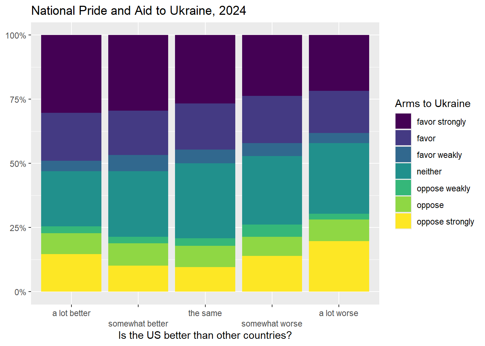

Chapter 8 From Pearson’s r and linear regression
8.1 Getting started with this chapter
To get started in today’s chapter, open the project that you made in lab 1. If you forgot how to do this, see the instructions in section 2.2.
Now type install.packages("ggrepel") into the Console. This new package will help us label our graphs in a way that is easier to read.
Now, open a new script file and save it in your scripts folder as “chapter 8 practice.” Copy and paste this onto the page (updating the text so that it is about you):
####################################
# Your name
# 20093 Chapter 8, Practice exercises
# Date started : Date last modified
####################################
#libraries------------------------------------------
library(tidyverse)
library(ggrepel)Finally, select all the text on this page, run it, and then save it.
8.2 Pearson’s R
What happens when we are interested in the relationship between two interval variables? Up into now, our solution has been to convert those variables into ordinal variables and use chi-squared, Lambda, Cramer’s V, and/or Somers’ D. However, when we do that, we are throwing out information. For example, if we convert an interval measure of respondent’s age into an ordinal variable coded “young”, “middle aged”, and “old”, we are throwing out the distinctions between, for example, 30 and 31-year-olds (assuming that they both fall into our young category) and between 80 and 81-year-olds (assuming that they both fall into our old category).
Pearson’s R is a test that lets us look at the relationship between two interval variables. It produces a statistic that ranges from -1 to 1, with negative numbers indicating a negative relationship and positive numbers indicating a positive relationship. Although, unlike Lambda and Somers’ D, it is not a Proportional Reduction in Error (PRE) statistic, values farther from 0 indicate stronger relationships, and values closer to 0 indicate weaker relationships (with 0 meaning no relationship).
R makes it very easy to calculate Pearson’s R. You can simply use the command cor.test(). Below, I test the relationship between two variables that I have found in the states2010 dataframe: citi6013, which is a measure of citizen ideology ranging from 0 to 100 (with higher numbers meaning more liberal and lower numbers being more conservative) and pctfemaleleg (a measure of the percent of a state’s legislators that are women). My hypothesis is that in states where the population is more liberal, there will be more female legislators. In other words, I am hypothesizing that Pearson’s R will be positive. Here is the command:
cor.test(states2010$pctfemaleleg, states2010$citi6013)##
## Pearson's product-moment correlation
##
## data: x and y
## t = 4.288, df = 48, p-value = 8.655e-05
## alternative hypothesis: true correlation is not equal to 0
## 95 percent confidence interval:
## 0.2904799 0.7018161
## sample estimates:
## cor
## 0.5262759Pearson’s R is a symmetrical test, which means that it produces the same value regardless of which variable you treat as independent or dependent. So, it does not matter which order you enter the variables into a cor.test() command.
This is R’s Pearson’s R output. R calls this Pearson’s product-moment correlation, which is just another way of saying Pearson’s R. Look at the bottom number of this output: 0.527. That number is positive, which is consistent with my hypothesis. It also seems relatively far for zero, although as I noted above, that is more difficult to interpret with Pearson’s R because it is not a Proportional Reduction in Error statistic.
The p-value noted at the top ofthe output is 8.655e-05, which is R’s shorthand for 8.655x10-5, which is another way of saying 0.00008655. That is the probability that we would get a sample like this from a population where there was not correlation between our two variables. Since it is (much) lower than 0.05, we can conclude that this relationship is statistically significant. We can also conclude that by looking at the 95% confidence interval around our estimated Pearson’s R value. R reports a confidence interval of 0.29 to 0.7, which does not include 0. Thus, we are 95% confident that there is a positive correlation between our two variables at the population level.
8.3 The scatterplot
To visualize a relationship between two interval variables, we can generate a scatterplot, one of my favorite graphs to generate. Here is the code that we can use to visualize the relationship between those two variables above. In general, consistent with other graphs you have made, remember to put your independent variable on the x-axis and your dependent variable on the y-axis (as always, you can find a template for this graph in the file “Strausz ggplot2 templates” which is in the “rscripts” folder that was in the zipped filed that you should have downloaded in section 1.3.
ggplot(states2010, aes(x = citi6013, y = pctfemaleleg)) +
geom_point(alpha=.3)+
geom_text_repel(aes(label = state), size=3)+ #if you don’t have data that you want to
#use to name your dots, leave this line
#off.
labs(x = "Ideology of citizenry (higher numbers mean more liberal)",
y = "Percent of state legislators that are women")+
ggtitle("Citizen ideology and female representation in state legislatures, 2010")## Warning: Removed 1 rows containing missing values (geom_point).## Warning: Removed 1 rows containing missing values (geom_text_repel).
The neat thing about scatterplots is that they display the values of all of the cases of the two variables that you are interested in for all of your data. So, looking at this graph, we can see dots representing all 50 states. How far each dot is along the x-axis tells us how liberal their citizenry is, and how far each dot is along the y-axis tells us the percent of their state legislators that are women.
We are also able to label our dots. This is something that is possible when you are comparing a relatively small number of units that you are able to identify in a way that makes sense to your readers. Labeling dots usually doesn’t make sense with survey data, such as what we find in the ANES dataframe, because there are many thousands of individuals who took that survey, and they took it anonymously.
The above graph alone tells a pretty clear story about the relationship between our two variables – it is easy to visualize a positive relationship going from Oklahoma in the bottom left to Vermont in the top right. However, what if we wanted to ask R to fit a line to this data? In other words, what if we wanted R to find the line that is closest to all of the points on this graph? To do that, we can add a single line to our code from above:
ggplot(states2010, aes(x = citi6013, y = pctfemaleleg)) +
geom_point(alpha=.3)+
geom_smooth(method='lm', formula= y~x)+ #this is the line of code we add here
geom_text_repel(aes(label = state), size=3)+
labs(x = "Ideology of citizenry (higher numbers mean more liberal)",
y = "Percent of state legislators that are women")## Warning: Removed 1 rows containing non-finite values (stat_smooth).## Warning: Removed 1 rows containing missing values (geom_point).## Warning: Removed 1 rows containing missing values (geom_text_repel).The line on this graph is called a regression line, and it is the line that is as close as possible to all of the dots on this graph. The shaded region around it is a 95% confidence interval. Visualize drawing a line from the top left corner of that region to the bottom right corner. If that line that you are visualizing was horizontal or sloping down, then we could not rule out the possibility that there was no relationship or a negative relationship between the two variables that we are looking at there. But even that imaginary line slopes upwards, which is good evidence for our hypothesis.
8.4 Bivariate linear regression
As I mentioned in the last section, the line that goes through the graph that we just generated is called a regression line. Let’s now spend a few minutes reviewing some of what we know about lines from algebra. This is the formula for a line:
Y=MX+B
X is our independent variable, and Y is our dependent variable. M is the slope of our line. In other words, a one unit increase in X leads to an M unit increase in Y (or, if M is negative, a one unit increase in Y leads to an M unit decrease in Y). B is the Y intercept of our line. When X is zero, B will be the value of our line.
When we ask R to draw a regression line on a scatterplot, we are asking R to first find the line that most closely fits all of the points in our scatterplot, and then generate a formula for that line. To generate that formula, R needs to find the slope and the intercept. To ask R to report what slope and intercept it found, we can use this command:
lm(formula = pctfemaleleg ~ citi6013, data = states2010)##
## Call:
## lm(formula = pctfemaleleg ~ citi6013, data = states2010)
##
## Coefficients:
## (Intercept) citi6013
## 13.2388 0.2326In this code, we must put the dependent variable first, and then the independent variable second. The “lm” stands for “linear model” (because we are asking R to generate the formula for a line). This is the most basic form of regression, an extremely powerful family of statistical techniques that are used across the social and natural sciences. This most basic form of regression is called “Ordinary Least Squared,” or OLS regression, because calculating it involves find the line with the minimum squared distance between each point in a scatterplot and that line.
Looking at the output, R is giving us two numbers: they are R’s estimates for the slop and the intercept in the formula Y=MX+B. Recall that our independent variable is the ideology of a state’s population, and our dependent variable is the percent of female legislatures in a state. So, we can rewrite the Y=MX+B formula with those variables, like this:
%female legislators=M(state ideology) + B
And now we can replace M with the slope (which is right under citi6013, the ideology measure on our output) and B with the intercept (which is right number the world “intercept” in our output):
%female legislators=0.23(state ideology) + 13.24
This formula is telling us two things. First, it is telling us that for every one unit increase in our independent variable (our state ideology scale with higher numbers meaning more liberal), the percent of female legislators increases by 0.23. Second, it is telling us that in a state where our state ideology scale was 0 (meaning the residents were as conservative as possible), 13.24% of the state legislators would be women.
Now we know, looking at the second graph in section 8.3, that this line doesn’t perfectly fit the data. Some points are right on the line, like Florida, but others are far above the line, like Colorado, or far below the line, like South Carolina. In order to get a sense of how well our regression actually fits the data, we can ask R to summarize our regression, like this:
summary(lm(formula = pctfemaleleg ~ citi6013, data = states2010))##
## Call:
## lm(formula = pctfemaleleg ~ citi6013, data = states2010)
##
## Residuals:
## Min 1Q Median 3Q Max
## -13.5990 -3.7725 -0.5453 3.0920 14.0931
##
## Coefficients:
## Estimate Std. Error t value Pr(>|t|)
## (Intercept) 13.23882 2.69136 4.919 1.06e-05 ***
## citi6013 0.23255 0.05423 4.288 8.66e-05 ***
## ---
## Signif. codes: 0 '***' 0.001 '**' 0.01 '*' 0.05 '.' 0.1 ' ' 1
##
## Residual standard error: 5.904 on 48 degrees of freedom
## (1 observation deleted due to missingness)
## Multiple R-squared: 0.277, Adjusted R-squared: 0.2619
## F-statistic: 18.39 on 1 and 48 DF, p-value: 8.655e-05There is a lot in this output, but there are a few things that you should focus on. First, look at the estimated slope and intercept. Those are the same as above, when we just did the lm() command without summary(). Second, look at the column that says “Pr(>|t|).” That is the significance level of the coefficient and the intercept. In other words, that is the probability that we would see a sample like this from a population where the intercept was 0 and where the slope was 0. The significance level of the intercept is less important, but let’s think about the significance level of the slope. If the slope were 0, then whatever happened to X, Y would not change. Let’s look at the formula to remember why:
%female legislators=M(state ideology) + B
If our slope (M) were 0, then the estimated percent of female legislators would be B whatever the state’s ideology was. And thus, there would be no relationship between state ideology and percent of female legislators.
So, if we can say that it is unlikely that the true slope of our line is 0 (because the p-value is below the level of risk of error that we are willing to take, usually set to .05 in political science), then we can conclude that there is likely to be a relationship between our two variables. Since the p-value of our slope is 8.66*10-5, we can conclude that we are pretty unlikely to get this kind of data from a population with no relationship between our independent and dependent variables. Therefore, we can conclude that this relationship is statistically significant.
There is one final aspect of this output that we should discuss: the \(R^2\) and adjusted \(R^2\) values. \(R^2\) is a Proportional Reduction in Error (PRE) measure of the strength of a regression relationship. It ranges from 0 to 1, and it tells us the proportion of variation in our dependent variable that is explained by our independent variable. Because \(R^2\) values are often a little bit inflated for some statistical reasons that we don’t need to get into in this chapter, it is generally better to use the adjusted \(R^2\) to interpret regression results. So, in this case, an adjusted \(R^2\) of .2619 tells us that variation in ideology can account for about 26.19% of variation in the percent of female legislators in a state.
8.5 Review of this chapter’s commands
| Command | Purpose | Library |
|---|---|---|
| cor.test() | Generates a Pearson’s R statistic for the relationship between two variables. Variables can be listed in any order and should be written dataframe$variable. | Base R |
| lm(formula = DV ~ IV, data = DATAFRAME) | Generates the slope and intercept for a regression line. Replace DV with the dependent variable you are interested in, the IV with the independent variable, and DATAFRAME with the dataframe that you are using. | Base R |
| summary(lm(…)) | Generates much more data about a regression relationship than the above command. Replace the “…” with the IV, DV, and DATAFRAME the same way that you would with the above command. | Base R |
8.6 Review exercises
Let’s practice some of the things that we learned in this chapter.
- Create a new R script called “Chapter 8 Exercises,” and save it to your R scripts folder. Make a header for the script based on the description from section 2.3. Use the library() command to load the tidyverse and ggrepel libraries.
- Choose an interval variable from either states2010 or world (NOT ANES) that you want to think about as a dependent variable (don’t choose one of the variables that we used as an example in this chapter). Generate a histogram and statistics to help you visualize and discuss the central tendency and dispersion of this variable.
- Create a new file in your word processor. Paste the graphic that you generated from #2 into your word processor file. In a few sentences, discuss the central tendency and dispersion of that variable.
- Choose a second interval variable from the same dataset that you used for #2. In your word processor file, briefly generate and discuss a null and research hypothesis. What do you expect to see in this relationship and why?
- Use
cor.test()to calculate a Pearson’s R value for this relationship. Paste the output into your word processor file, and interpret it in a few sentences. What can you conclude about this relationship and why? - Make a scatterplot of the relationship between these two variables using the techniques that you learned in section 8.3. Make sure that your your graph has a regression line and that the points are labelled. Paste your graph into your word processor.
- Run a linear regression of the relationship between the two variables that you are looking at in today’s analysis. Paste the output into your word processor.
- In a few sentences, interpret the estimated intercept, coefficient, significance levels, and adjusted \(R^2\).